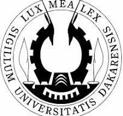

L'université Cheikh-Anta-Diop-de-Dakar (UCAD), également connue comme université de Dakar, est la principale université de Dakar, la capitale du Sénégal, en Afique de l'Ouest. Elle porte le nom de l'historien et antropologue Cheikh Anta Diop